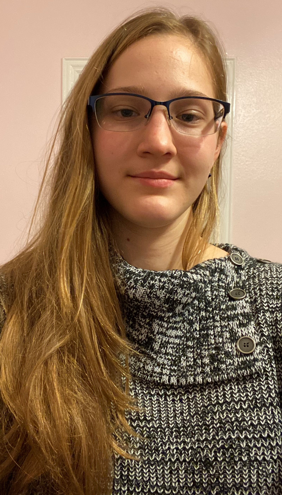

Professional Presence
About Me
HOWDY!
My name is Isidora Wright!
I am a junior at Texas A&M University, pursuing a Bachelor of Science in
Computer Engineering with a minor in cybersecurity. I am also pursuing a graduate certificate in cybersecurity.
I am a part of Aggie Coding Club (ACC) as well as Cybersecurity Club. I have just recently joined the ACC, but I have
been in the Cyber Club for one year now. I took a Codepath cybersecurity course last year that covered the basics
of cybersecurity. I am the Treasurer for my honor society, IEEE-HKN, for 2022-2023 school year.
A little about me: I am a twin and an irish triplet.
I am both a team leader and a follower. I believe that it is important to know when to take the lead and when to step down.
I believe that a great team is compirsed of people with diverse ideas. As an engineer, it is a good thing to think outside
the box. I like when many people from different backgrounds and experiences are able to put their minds together to create an effective
and functioning product.
OverView:
This past summer, from June 6, 2022 - August 12, 2022, I did a ten-week cybersecurity internship with the Department of Energy (DOE)
in Idaho Falls, Idaho. My project was to write a gap analysis between NIST 800-53 revision 4 and revision 5 security controls.
During my internship, I got the opportunity to go to Sandia Labs in Albuquerque, New Mexico for the TracerFire Training. The
entirety of the training was tracking the forensic footsteps of adversaries. Despite being fairly new to cybersecurity, my team
and I got second place in the competition that they held as well as got real life experience on what incident response is all about.
To learn more about my internship and technical projects, please go to the technical portfolio module.
In high school, I co-founded a community service project called Feed the First Responders, where a group of people and I made
homemade meals for 30-40 firefighters for three fire stations in Plano and Allen, TX. To learn more, please go to the Service
module.
When I graduate, I aspire to go into cybersecurity. I am still deciding on what in cybersecurity I want to do for my job, but
to learn more about me, there are several modules to choose from! For more general, resume-like information, please refer to
the Qualifications module.